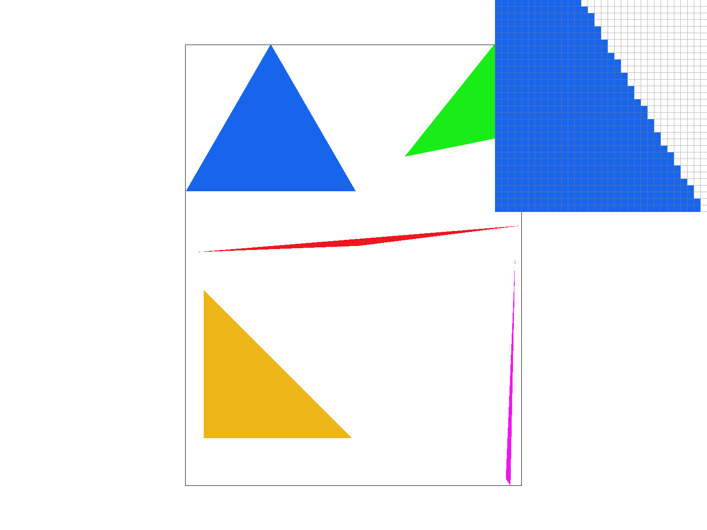
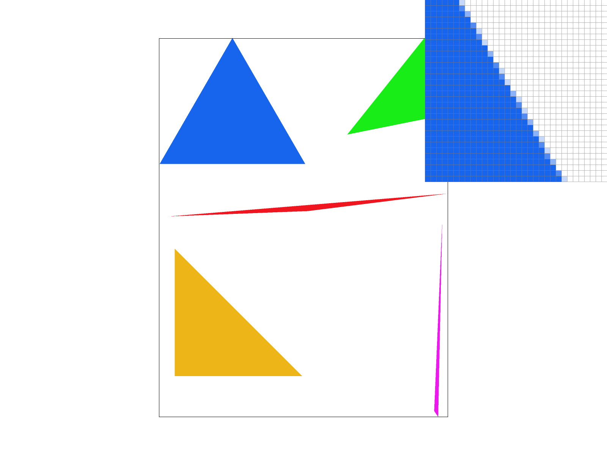
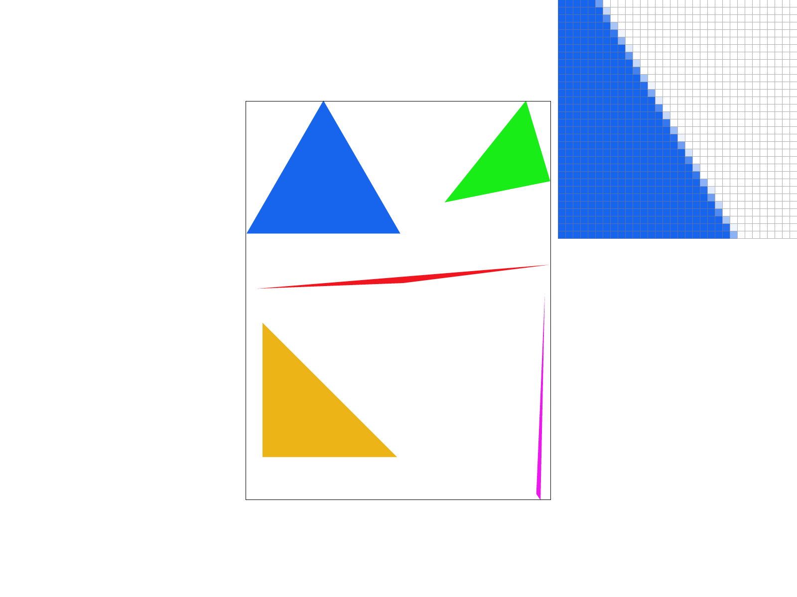
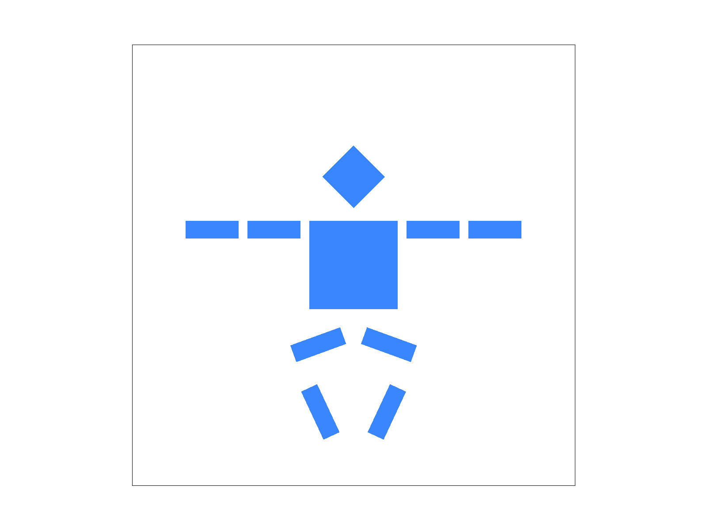
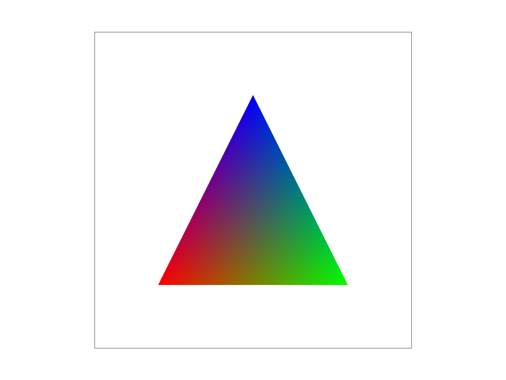
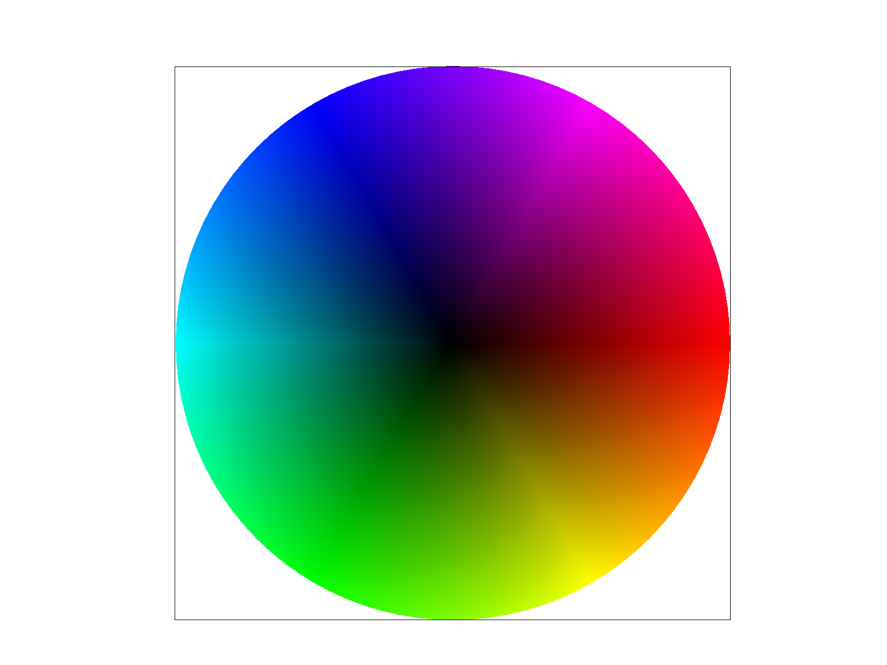
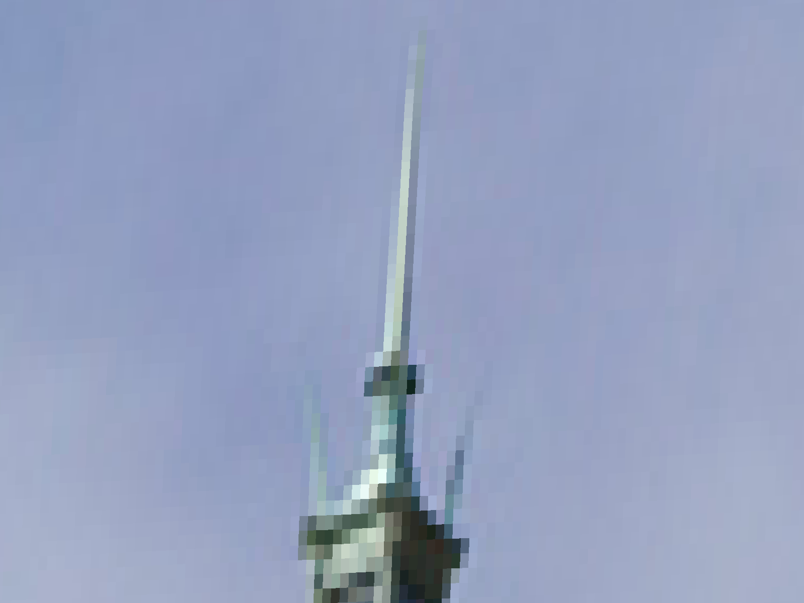
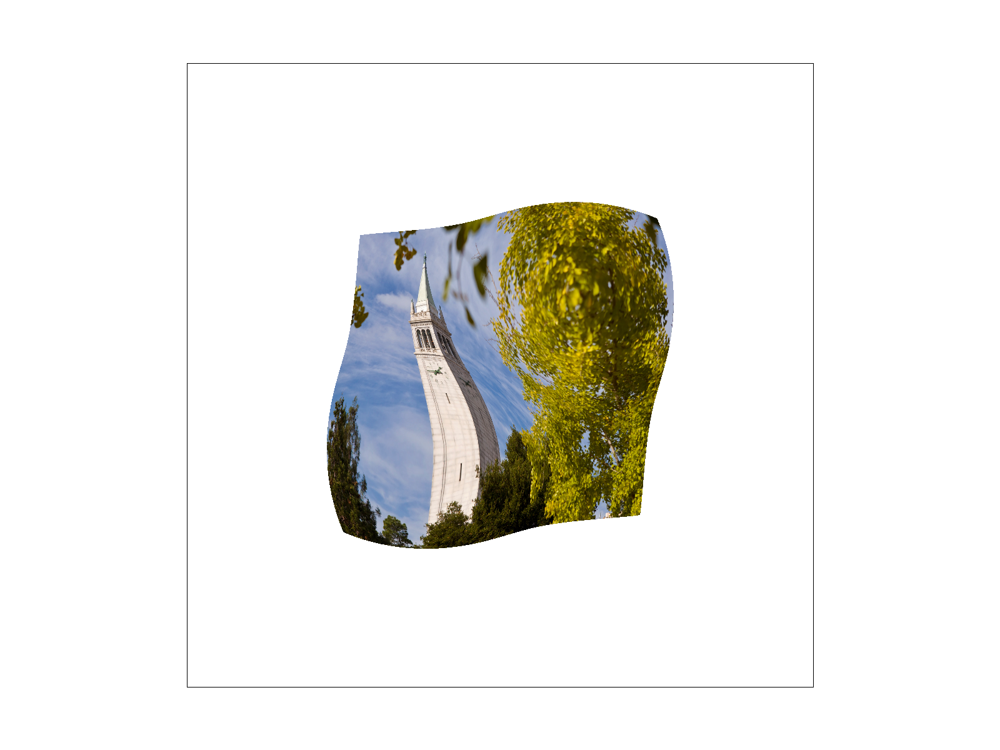
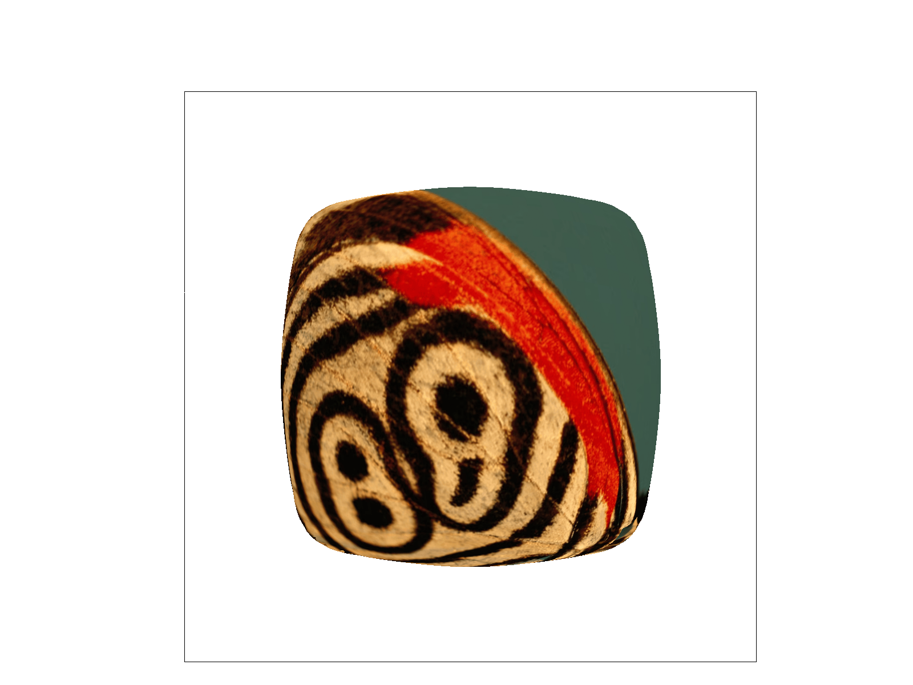
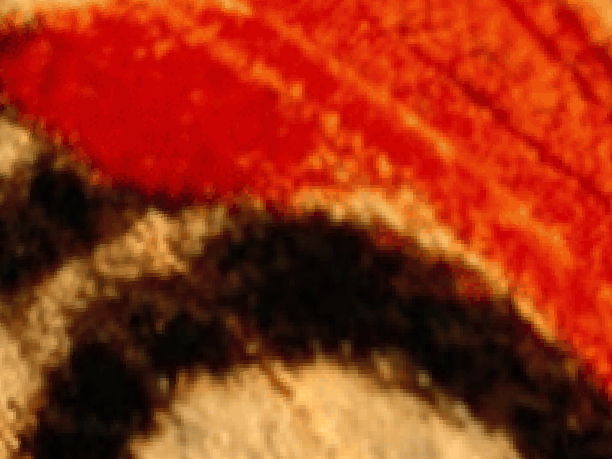

CS184/284A Spring 2025 Homework 1 Write-Up
Link to webpage:https://cal-cs184-student.github.io/hw-webpages-jasminema01/hw1/index.html
Link to GitHub repository:https://github.com/cal-cs184-student/hw1-rasterizer-biba
Overview
In homework 1, we implemented the processes of texture mapping within a rasterization pipeline. Texture mapping allows us to add high-resolution surface detail without raising geometric complexity by mapping a 2D image onto a 3D surface and then into screen space. Texture coordinates (u,v) are assigned at triangle vertices and interpolated across the surface using barycentric coordinates to obtain smoothly varying values per fragment. Since applying textures is “resampling”, differences between screen sampling rate and texture sampling rate can create jaggies and moiré patterns. To address this, we implemented pixel filtering, increasing samples per pixel, and mipmapping with level selection and interpolation, demonstrating how filtering and hierarchical texture representations reduce aliasing with tradeoffs on computational efficiency.Task 1: Drawing Single-Color Triangles
For each triangle polygon, we first compute the boundary this triangle lives in, then set the x_min, x_max, y_min, y_max respectively based on min/max vertex coordinates. Then for every pixel in this clamped box, we determine if it’s inside a triangle using the helper function point in triangle test with x + 0.5 and y + 0.5 as the sampled pixel center. A point would be inside a triangle if all three edge values have the same sign (either positive or negative to handle counter-clock wise and clockwise vertex orders). If it’s inside according to the test, we fill_pixel(x, y, color).The algorithm simply uses 3 edge function evaluation (constant per sample), therefore it is no worse than one that checks every sample within a bounding box.

Task 2: Supersampling
To supersample, we change the sampling rate of 1 from Task 1 to handling a sampling rate of N (dimension = √N x √N) by adding double for-loops to iterate through these subpixels within the original pixel, as well as introducing the extra data structure sample_buffer, which is a vector that holds the supersamples (multiple color samples per pixel). The allocation size for this buffer is width x height x sample_rate. We index into this buffer using the base index computed as sample_buffer[(y * width + x) * sample_rate], and each subpixel is accessed via base + s. We compute the pixel center with x + (sx + 0.5) / n and similarly for y, then perform the inside-triangle test to determine coverage. We then write into the correct position in sample_buffer[base + s]. In other words, each subpixel is tested for triangle coverage and then shaded independently.
At the end, we convert the supersample buffer into the final framebuffer image through void RasterizerImp::resolve_to_framebuffer(). It computes the average (box filter) color from the sample_rate samples in sample_buffer, then writes this color into rgb_framebuffer_target, which is 8-bit per channel, completing the antialiasing step.
Some other functions changed include RasterizerImp::RasterizerImp, where we initialize supersample storage and sample_buffer to hold width * height * sample_rate entries, and RasterizerImp::fill_pixel(...) to ensure points and lines still render correctly. We also modified RasterizerImp::set_sample_rate() to take into consideration changes to the supersampling rate so that updates are reflected and the sample_buffer size is recalculated accordingly. Lastly, we modified RasterizerImp::set_framebuffer_target() to update the rasterizer’s width and height when the framebuffer resolution changes, and to resize the supersample buffer accordingly.
Below, we can observe the effects of supersampling, where sample_rate = 16 clearly produces edges with more gradience (more samples averaged according to the algorithm), compared to sample_rate = 4 and sample_rate = 1.



Task 3: Transforms
We wanted the cubeman to do a stretching diamond pose. To achieve this, we rotated both legs outward and then bending the lower segments inward for symmetry. We also changed the cubeman's color to blue. We rotated the full left and right groups at the hips using rotate (70) and rotate(-70) to spread the thigh bars out symmetrically. Then, within each leg group, we bent the lower segment inward using a nested transform. The left shin uses rotate(-95) translate(-30 70) and the right shin uses rotate(95) translate (30 70).
Task 4: Barycentric coordinates
Inside a triangle, any point (x, y) can be expressed as a weighted combination of the triangle’s three vertices. If the vertices are A, B, and C, then any point inside the triangle can be written as:
(x, y) = αA + βB + γC
where α, β, and γ are the barycentric coordinates. These weights represent how much influence each vertex has on the point, and they always satisfy:
α + β + γ = 1
Barycentric coordinates can be computed using area ratios. Each weight corresponds to the area of the subtriangle opposite that vertex divided by the total area of the original triangle. In other words, the triangle is partitioned into three smaller subtriangles, and each weight measures how much of the total area belongs to the subtriangle associated with that vertex.
In the visualization above, one vertex is colored red, one green, and one blue. Because barycentric coordinates act as interpolation weights, the color of any pixel inside the triangle is computed as a weighted combination of the three vertex colors. If a pixel is closer to the red vertex, its α value is larger, so red contributes more to its final color. Similarly, pixels near the green or blue vertices are more influenced by those colors. Near the center of the triangle, the weights are roughly equal (about 1/3 each), producing a smooth blend of red, green, and blue across the triangle.


Task 5: "Pixel sampling" for texture mapping
Pixel sampling can be used to determine what color a screen pixel should receive based on a texture image. Each triangle vertex has a texture coordinate (u,v), and for every rasterized pixel inside the triangle, we use barycentric interpolation to compute the pixel’s corresponding (u,v) coordinate. Once we have that, we sample the texture image at that location to determine the pixel’s color. In our implementation to perform texture mapping, after computing the interpolated texture coordinates for each sample point, we applied either neatest or bilinear sampling depending on the selected pixel sampling mode. For the nearest sampling, we chose the texel closest to the (u,v) location. For bilinear sampling, applied linear interpolation on the four neighboring texels to produce a smoother result.Nearest sampling chooses the texel closest to the (u,v) coordinate and returns its color directly, which is quite simple and fast, as it only requires one texel lookup, but produces more noticeable aliasing when textures are minified. Bilinear sampling looks at the four texels neighboring the (u,v) coordinate and linearly interpolates between them. It first interpolates horizontally between two pairs of textels, then interpolates vertically between those intermediate results. This produces smoother transitions and reduces jaggedness between texels, but it creates a slight blur and is less cost efficient in computation.
The difference between nearest and bilinear sampling is most apparent when texture is magnified, where nearest looks blocky and bilinear looks smooth. When the texture has high-frequency detail, where nearest causes strong aliasing. Overall, bilinear sampling reduces aliasing by smoothing between texels, while nearest sampling keeps the image sharp but intensifies aliasing.

Edges look jagged and textures are blocky.
The edges are more smooth, but texture remains blocky. Texture aliasing is reduced by a slight amount but still noticeable.

Textures are slightly smoother and blockiness is reduced with blur.
This produces the smoothest result overall and the most stable with minimal jaggies.
Task 6: "Level Sampling" with mipmaps for texture mapping
To dynamically determine resolution based on texture and not just decide on one sample rate, we use mipmaps. This precomputes smaller, pre-filtered versions of the texture, and chooses one that best matches the screen image.First, we compute (u,v) texture coordinates by interpolating vertex UVs using barycentric weights, given a point (x, y) in screen-space. Then, we sample at sub-pixel positions. For each sub sample, we go through the steps of independently computing UVs, derivatives, and sampling the texture to ensure mipmap works per sample (not just per pixel) according to how quickly UV changes on the screen image. We compute two additional texture coordinates at (x + 1, y) and (x, y + 1), stored in SampleParams.
In SampleParams, we log these quantities sp.p_uv, sp.p_dx_uv, sp.p_dy_uv, and sp.psm, sp.lsm, which supply information into our texturizer for how to mipmap and sample within each mipmap level. In Texture::get_level, we use these values to estimate the texture footprint of a screen pixel by computing UV differences, scaling by the width and height of the full-resolution texture, then selecting the maximum magnitude of the footprint in the x and y directions. This gives us D = log2(L), with L being the footprint size. The resulting level is clamped to the valid range of mipmap levels.
In Texture::sample, we use the computed level to perform level sampling.
- L_ZERO: sampler = default 0.
- L_NEAREST: sampler chooses the closest integer mipmap level.
- L_LINEAR: sampler blends the two nearest levels with linear interpolation.
Tradeoffs
For tradeoffs, nearest pixel sampling is the fastest out of all the methods, but it produces the blockiest results, while bilinear sampling on the other hand improves smoothness at a small computational cost.
Level sampling affects aliasing during minification. Mipmaps use prefiltered, lower-resolution versions to better match the pixel, which reduces moiré patterns. As a result, however, it increases memory usage and requires more computation for selecting between different levels.
Increasing samples per pixel raises the screen-space sampling rate, which decreases the amount of jagged edges, but it is computationally expensive since shading is performed multiple times per pixel.



